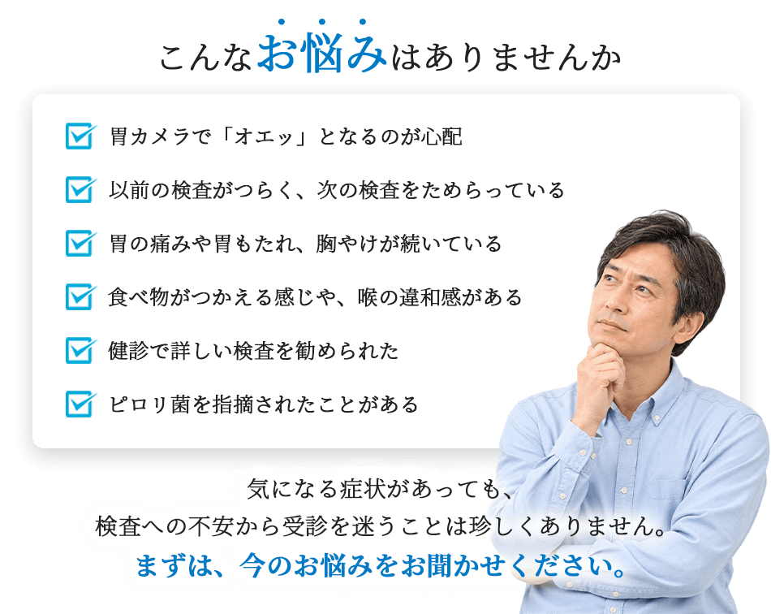
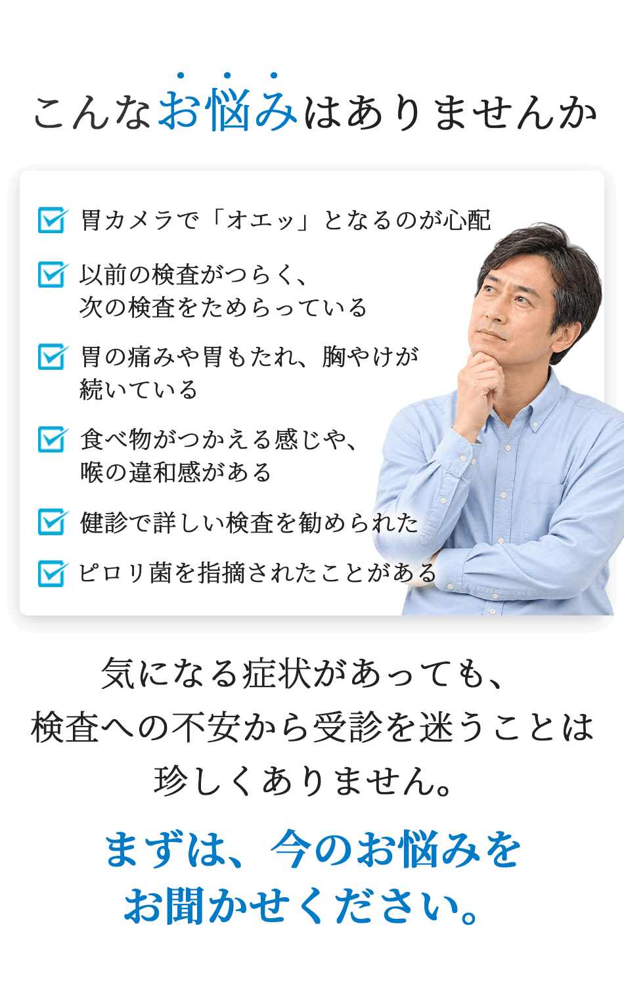
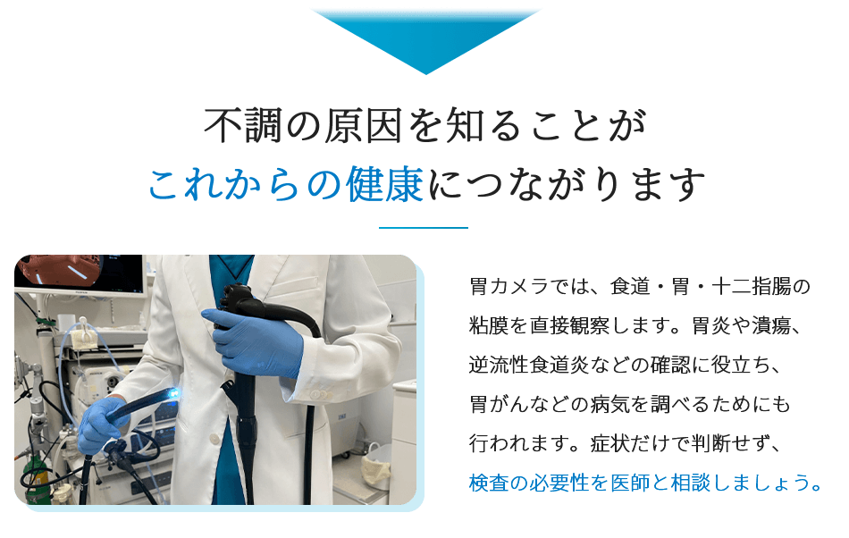
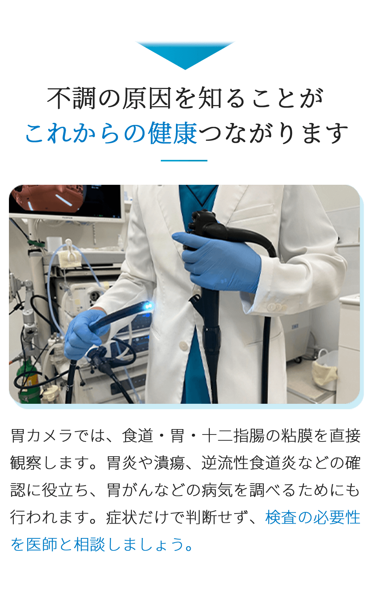
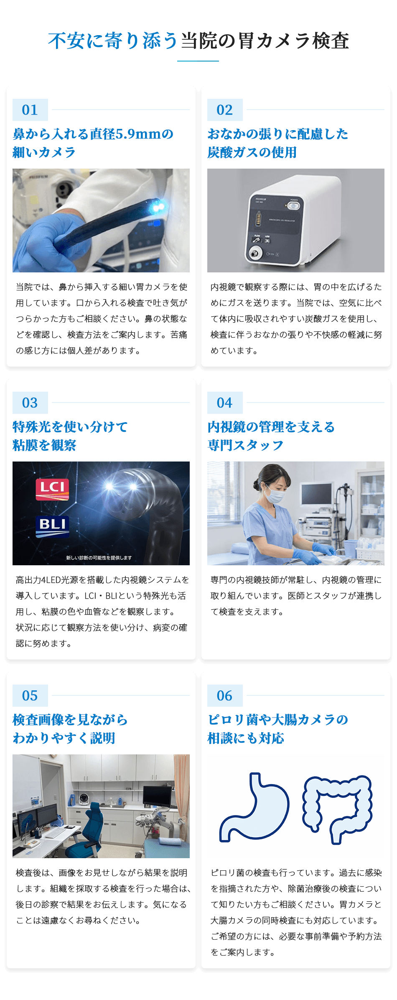
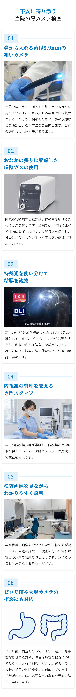
検査を受けるか
迷っている方も
まずはご相談ください
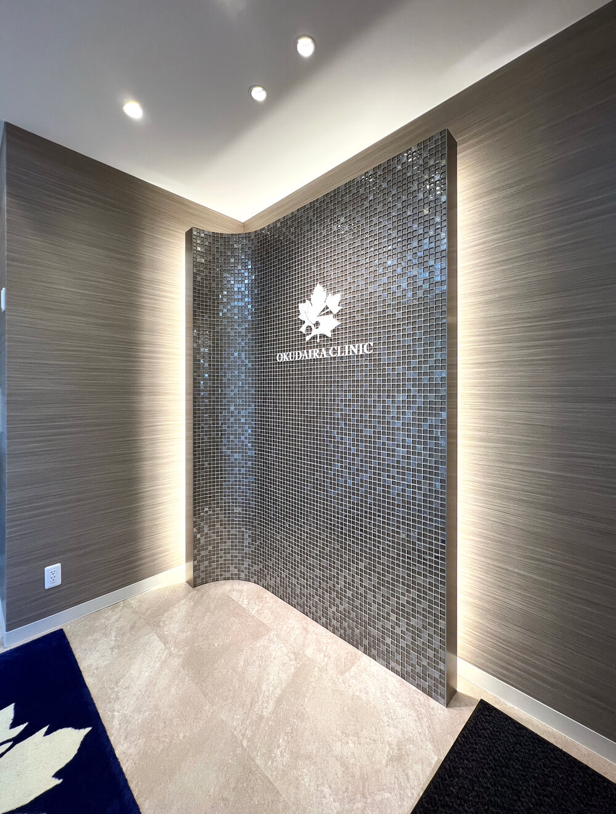
検査の方法や準備について、事前にお伝えします。
不安なことを一つずつ確認しながら、検査につなげていきましょう。
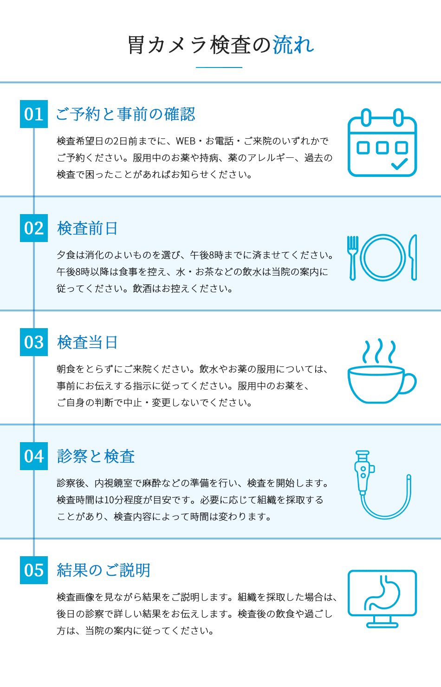
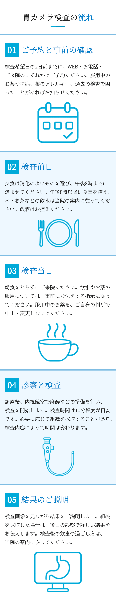
検査費用について
費用は、保険の自己負担割合や検査内容、組織検査の有無などによって異なります。保険適用の可否も含め、詳しくはご予約時または診察時にお問い合わせください。
お支払い方法
アリペイ（Alipay）・WeChat Pay・銀聯カードなど、 各種キャッシュレス決済をご利用いただけます。
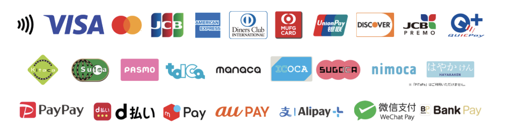
検査に伴う主なリスク
胃カメラ検査では、鼻や喉の違和感、鼻出血などが生じることがあります。また、まれに出血や消化管に穴が開く穿孔、麻酔薬によるアレルギー反応などが起こる可能性があります。安全に配慮し、体調や既往歴を確認したうえで検査を行います。
よくあるご質問
鼻からの胃カメラなら苦しく
ありませんか？
細いカメラを使用して負担の軽減に努めていますが、感じ方には個人差があります。鼻の状態によっては鼻からの挿入が難しいこともあります。以前の検査でつらかったことがあれば、事前にお伝えください。
検査にはどのくらい時間が
かかりますか？
検査そのものは10分程度が目安です。診察や準備、結果説明にも時間がかかるため、余裕をもってご来院ください。
普段飲んでいる薬はどうすれば
よいですか？
お薬の種類や持病に応じて対応が異なります。予約時に服用中のお薬をお知らせください。血液を固まりにくくするお薬や糖尿病のお薬なども、ご自身の判断で中止せず、医師の指示に従ってください。
大腸カメラと一緒に受けられますか？
胃カメラと大腸カメラの同時検査に対応しています。大腸カメラには事前の診察や準備が必要なため、ご希望の方は予約時にご相談ください。
ピロリ菌の検査もできますか？
当院ではピロリ菌の検査も行っています。症状や過去の検査・治療歴を確認し、必要な検査をご案内します。
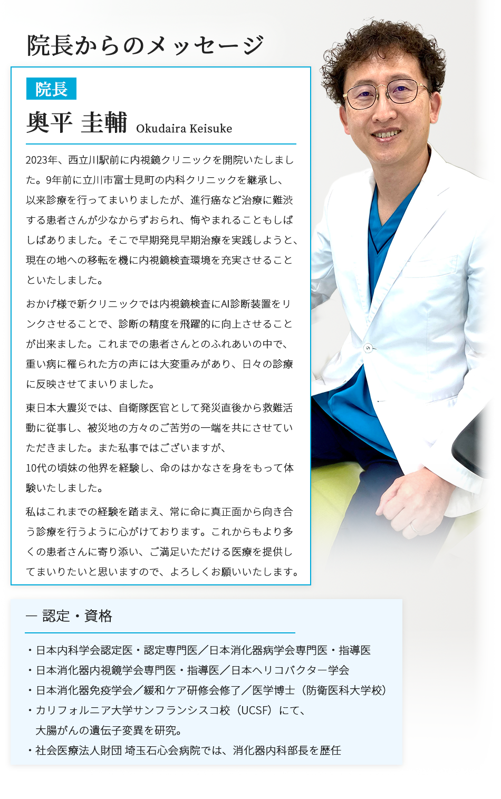
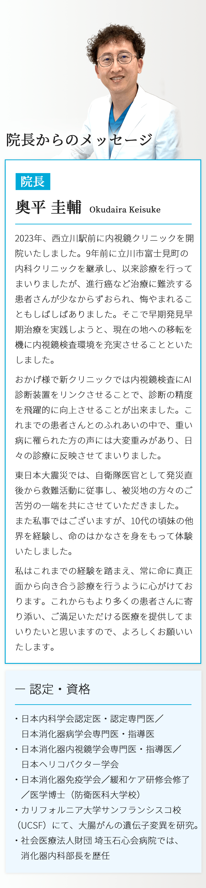
胃の不調をそのままにせず
まずは一度お話しください
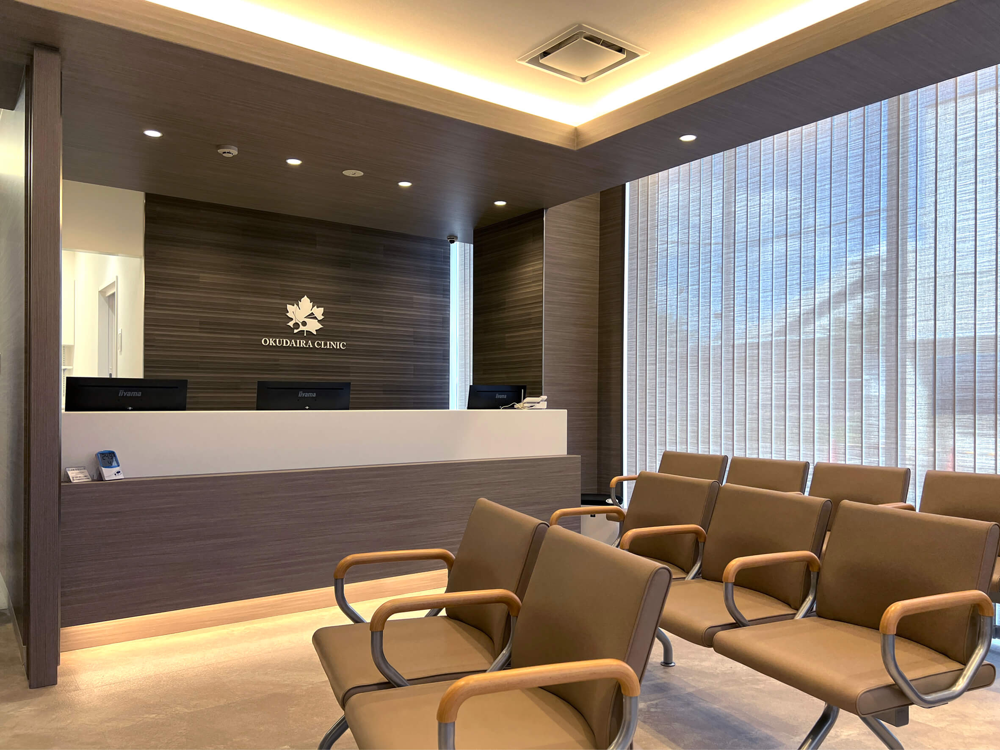
「まだ我慢できる」「検査が怖い」と迷っている方も、ご相談ください。立川・昭島・西多摩エリアの皆さまの身近なクリニックとして、病気の早期発見と健康づくりを支えます。
アクセスとご予約
建议您在就诊时由口译人员陪同。
| 医院名 | 奥平クリニック 西立川駅前内視鏡スクエア |
|---|---|
| 住所 |
〒190-0013 東京都立川市富士見町1-35-13 1F JR西立川駅前 |
| 電話 | 042-540-4180 |